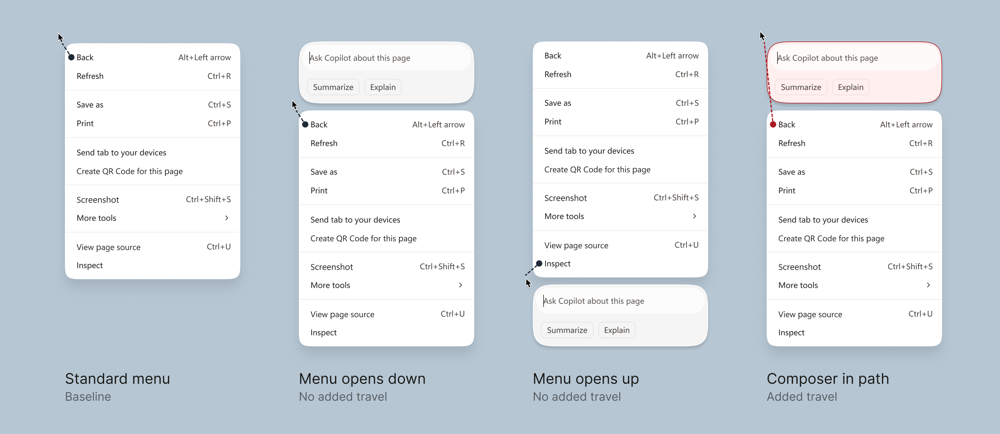
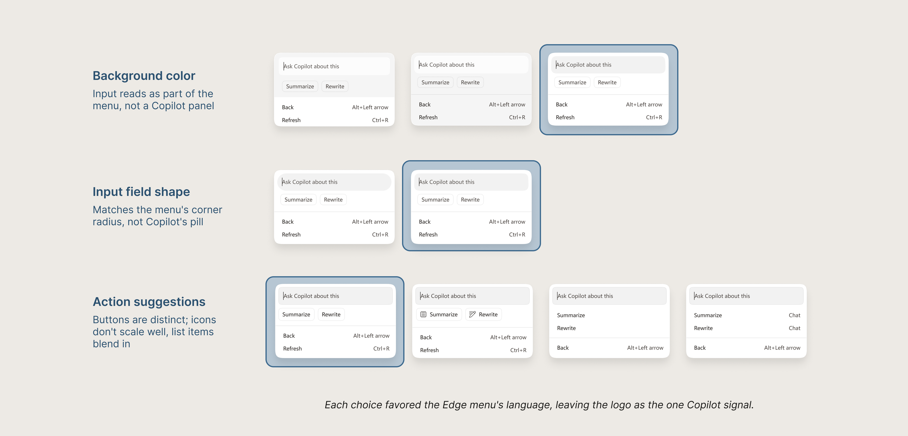

Problem
Copilot lived in the side pane. Edge didn’t feel like a true AI browser.
To ask about something specific on a page, users had to open the side pane and paste the exact text, image, or link they were looking at in chat. This meant the user did the work of carrying context to the AI, adding friction to the experience.
At the same time, we were hearing that users didn’t want AI everywhere in their browser. So, how do we make Copilot feel native to the browser without taking it over?
Approach
The context menu is where users already go when they have something in hand.
I started here because right-clicking is a familiar behavior for acting on web content. By the time someone opens the menu, the context is already there: the text, image, or link they’re pointing at, and a strong signal of what they want to do with it. That meant we weren’t asking users to learn a new behavior, just meeting them where they’re at.
Initial design
I stacked Copilot above the menu to protect the flow users already knew.
Placing the composer on top meant the traditional menu didn’t move, so the cursor path to every existing item stayed the same. Anyone who wanted Copilot could just start typing, and anyone who didn’t could ignore it. Two separate surfaces also let Copilot and Edge each keep their own visual language, which protected Copilot’s brand across Microsoft products and avoided forcing an awkward blend.

Iteration
Performance regressions ruled out two surfaces, so I redesigned around one.
While building, we found that rendering a second surface above the context menu caused performance regressions that blocked us from shipping. I worked with engineering partners to understand the cause and reopened the design question: how do we keep the composer fast, optional, and out of the way inside a single menu?
Removing the second surface also removed what had kept Copilot’s and Edge’s visual languages apart, so the redesign had to solve layout and visual language together.

Solution
An Edge-native composer that works in any contextual scenario.
The final design is a custom input field with contextual actions. The Copilot logo we brought over contributes to a stronger brand story across Microsoft products. It also signals that what you type goes to Copilot. The ghost text and quick actions adapt to the web element a user has selected.
The visual languages resolved as Edge’s design language moved closer to Copilot’s, in parallel. The result is quieter and more adaptable than the first design, and no longer tied to the context menu, which gave us the chance to redesign the component and bring it to more surfaces across Edge.

Impact
Scaling to multiple use cases across Edge.
The context menu was just the first use case. This pattern is now being explored by 3 teams and multiple feature areas in Edge.